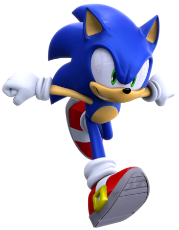

Conheca a historia de Sonic nos videogames
A história de Sonic the Hedgehog nos videogames é uma jornada épica de aventuras, combate ao mal e amizade. Tudo começa quando o cientista louco Dr. Ivo "Eggman" Robotnik decide tomar o controle do mundo, usando suas invenções malucas para escravizar os animais e criar um império de robôs.
Para frustrar seus planos malignos, Sonic, um ouriço azul super-rápido e com habilidades sobre-humanas, surge como um herói improvável. Ele começa a correr pelo mundo, coletando anéis de ouro e salvando seus amigos animais do cativeiro.
Origem de Sonic
A primeira aparição de Sonic nos videogames foi em 1991, com o jogo "Sonic the Hedgehog" para o Sega Genesis. Desde então, ele apareceu em inúmeros jogos, em uma variedade de plataformas, incluindo consoles de videogame, dispositivos móveis e PC.
Ao longo dos anos, Sonic enfrentou muitos desafios, desde batalhas contra Eggman e seus robôs gigantes até corridas emocionantes, enigmas desafiadores e, até mesmo, jogos de RPG. Alguns jogos mais populares da série incluem "Sonic Adventure", "Sonic Colors" e "Sonic Generations".